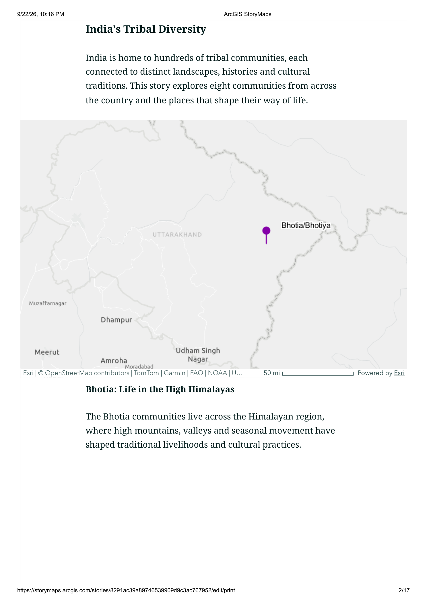
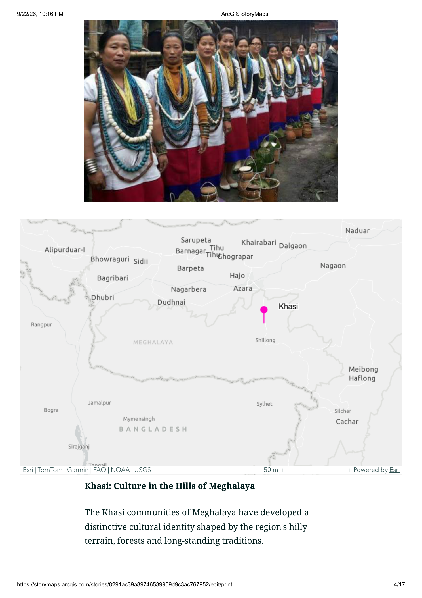
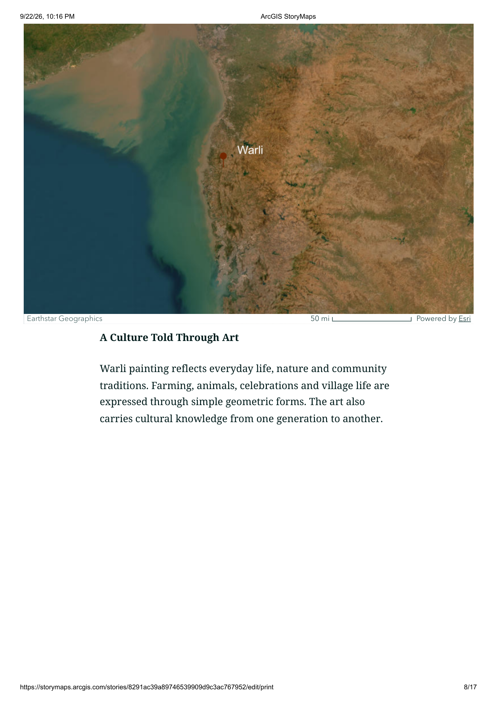
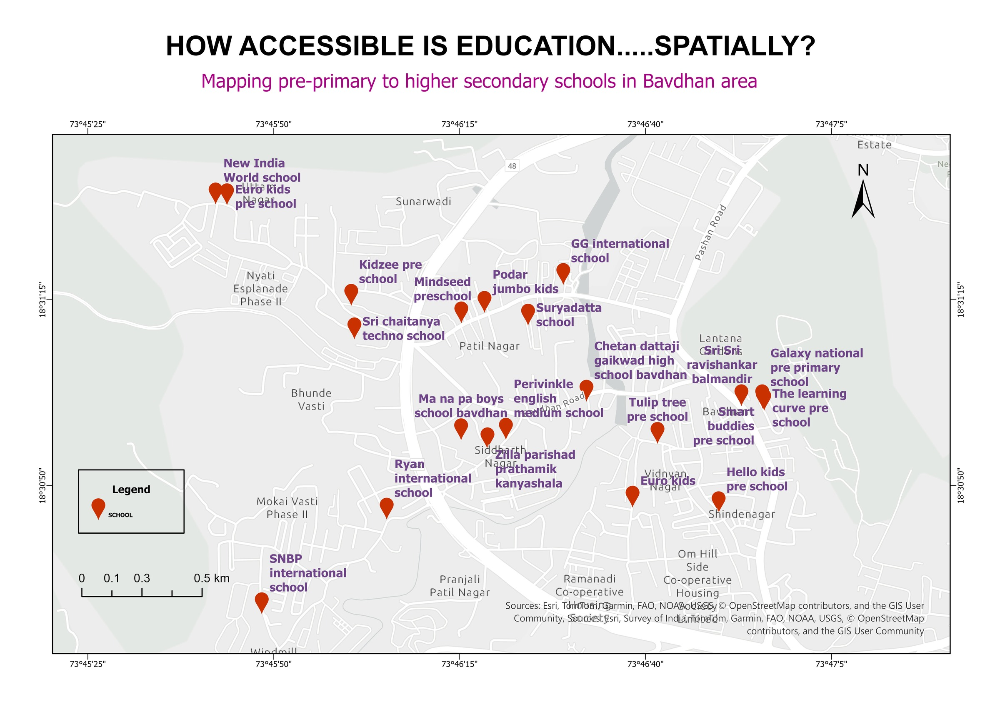
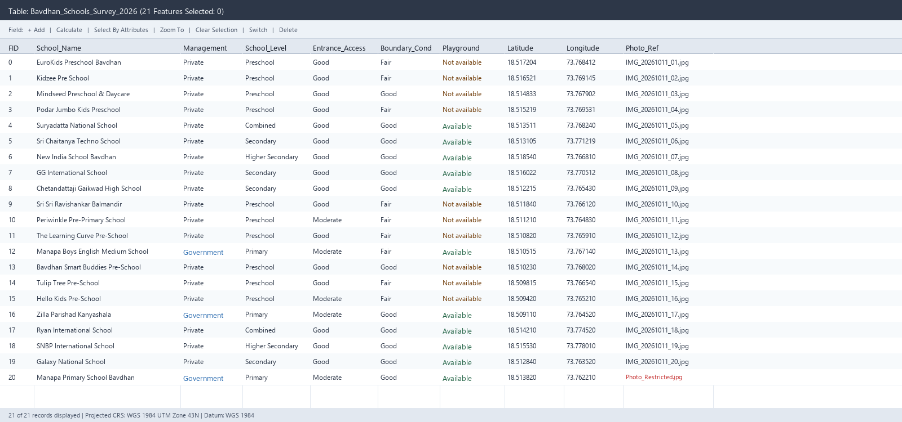

01 · Foundations (03h)
Geospatial science & spatial thinking
Concepts of geospatial science and technologies, spatial thinking principles, and applications to the Sustainable Development Goals (SDGs).
I’m Sonali Rajput, an MSc Geoinformatics student. This portfolio documents my learning through GIS concepts, field data collection, spatial interpretation and geographic storytelling.

The course connected the principles behind maps and spatial data with practical GIS operations. I practised these topics on the computer and applied the learning in assignments.
Concepts of geospatial science and technologies, spatial thinking principles, and applications to the Sustainable Development Goals (SDGs).
Data measurement scales, sampling, cartographic history, map scale, symbols, graphic variables, typography, statistical mapping, and StoryMaps.
Earth models (sphere, ellipsoid, geoid), plane vs geographic coordinates, geodetic datums, projection properties, distortion, and georeferencing.
Raster compression, vector primitives, topology and spatial relationships, data input, digitising errors, topology building, and geodatabases.
GNSS segments and constellations, signal structure, pseudorange, carrier phase, cycle slips, error sources, and field observation methods.
Attribute and spatial queries, buffering, neighbourhood functions, map overlay operations, multicriteria evaluation, and network analysis.
Applications across forestry and wildlife, mining, urban planning, disaster risk reduction, public health epidemiology, and emerging cloud GIS trends.
Problem identification, spatial requirements, schema design, primary field data capture, spatial analysis execution, and QA/QC verification.
Eight communities. Eight landscapes. One living heritage. The StoryMap explores connections between communities, their places, cultural identity, livelihoods and traditions.
I brought together eight communities—Bhotia, Apatani, Khasi, Warli, Toda, Gond, Santhal and Dongria Kondh—and used maps, imagery and short text to introduce their landscapes and cultural practices.
The project combined location mapping with visual storytelling. Instead of presenting the communities only as a list, I wanted readers to understand the relationship between people, place and living heritage across four broad geographical regions.
Open published StoryMap ↗At first, I struggled to turn my topic into a visual experience. Choosing the topic took time, and after settling on it, I could not make the StoryMap look the way I had imagined. Once I learned the interface by trying different tools and layouts, I started building the story—but then noticed that many slides were beginning to feel repetitive.
The real challenge was keeping the reader curious. I brainstormed alternatives, explored tutorials and examples, and used online guidance, including AI, to understand what I could change. Gradually, I experimented with map scales, imagery and section formats to make the narrative less predictable.
What I learned: an effective StoryMap needs editorial decisions as much as technical ones. Next time, I will sketch the story structure first, decide what each slide should achieve, and vary the format intentionally rather than designing each slide in isolation.

Introducing India’s tribal diversity and Himalayan Bhotia landscapes.

Khasi cultural identity in the hills and sacred forests of Meghalaya.

Editorial pacing combining folk art, cultural traditions and satellite imagery.
I carried out an individual field survey, collected school data around Bavdhan, and imported the observations into ArcGIS Pro to map locations and interpret spatial patterns.
I used EpiCollect5 to collect school locations and attributes, exported the dataset and imported the points into ArcGIS Pro. The most satisfying moment was seeing the locations I had visited appear on the map: the effort on the ground had become spatial data I could inspect and interpret.
I interpreted the distribution I could see, while recognising that the result represented the schools I surveyed rather than a complete census of all schools in the area.
This was one of the most interesting assignments of the semester because I completed the field collection independently around Bavdhan. Successfully mapping the records and interpreting their spatial pattern made the fieldwork feel worthwhile.
I found more pre-primary schools than secondary and higher-secondary schools, with dense clusters of 3–4 preschools within 500 metres. This reflects the emerging urban pattern for working parents. In terms of grounds, while only 10 schools had open-air playgrounds, 8 of the others had indoor play areas complying with MSBSHSE norms.
At one municipal school, I faced difficulty taking photographs due to security reasons, which taught me the importance of field protocols. I also wanted to calculate each school’s distance from a nearby main road in ArcGIS Pro, but road connectivity issues prevented me from completing that part.
What I learned: a field survey is shaped by access, observation and sampling—not just by the initial research question. In future, I would plan coverage more systematically, check secondary sources for missing schools and test the road-distance workflow earlier.

Surveyed school points, graticules, scale and basemap in Bavdhan area.

Field attributes including management type, school level, entrance access, and coordinates.
GIS operations require decisions about data quality, representation and purpose. These reflections connect course concepts to how I approach real tasks.
I had assumed a map is simply true to the ground and that area is area. In the lab, measuring area in GCS WGS84 returned square degrees, while reprojecting to Web Mercator inflated area away from the equator. Reprojecting to UTM Zone 43N showed me that every map projection is a deliberate model with mathematical trade-offs. I now check coordinate systems and projection properties before measuring or analysing anything.
A clean-looking map does not guarantee correct data. Geometry, attributes, metadata and digitising errors like overshoots and slivers affect analysis. Topological validation and error correction are essential analytical steps, not optional cosmetic cleanup.
Queries, buffering and overlay turn broad geographic questions into testable operations. Results depend on input data, distance and selection criteria, so I need to explain why I chose a tool, not only which tool I used.
GNSS provides coordinates for field observations, but location measurements have possible errors and limitations like multipath and satellite geometry (PDOP) in urban corridors. This reinforced the importance of consistent attributes and checking whether each point represents the feature observed.
At the beginning of the course, I mainly thought of GIS as a way to put locations on a map and make the result clear. The two assignments changed that view. The StoryMap taught me that geographic communication needs structure, variety and a reader-focused narrative. The Bavdhan survey showed me that spatial data begins before opening GIS software—with a question, a sampling decision, a field form and limits on what I can observe.
I now see GIS as a chain of decisions: how data are collected, represented, checked, analysed and communicated. I want to plan workflows more carefully, document limitations honestly, and use maps not just to display information but to explain spatial patterns and why they matter.
My next step: practise road-distance analysis on the school dataset, plan StoryMap structures before building them, and document important workflow decisions as evidence of learning.
For academic collaboration, geospatial projects, internships or discussion about GIS and mapping.